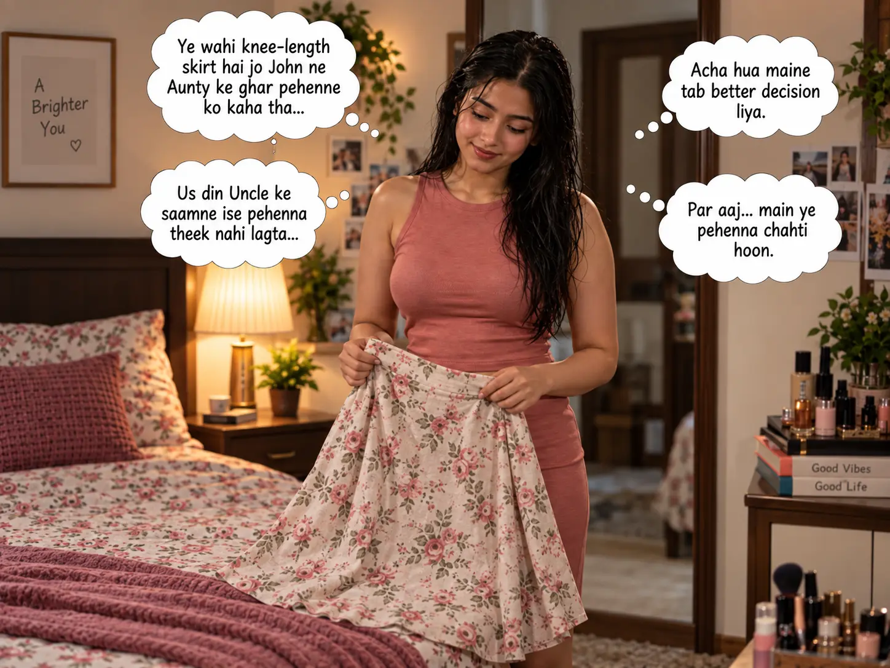
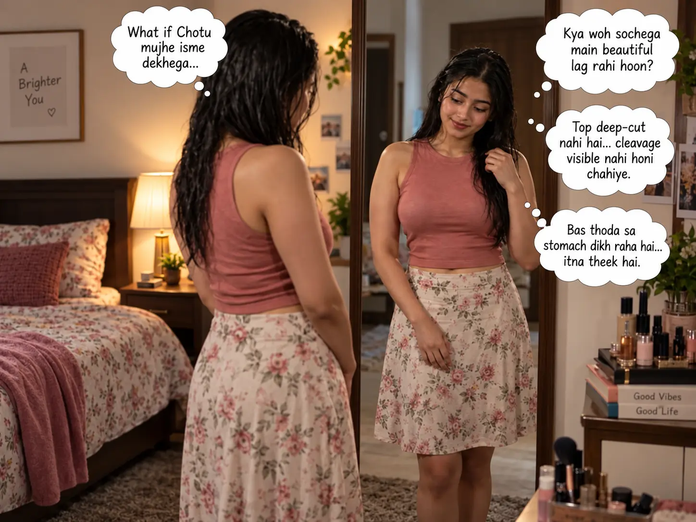

STORY PASSAGE · L1–6
L1 Dhika ki nazar us knee-length skirt par padi jo John ne usse Aunty ke ghar pehenne ko kaha tha.
L2 Us din woh skirt Aunty ke ghar nahi pehenna chahti thi, kyunki Uncle ke saamne use yeh disrespectful lagta. Ab sochne par use laga ki agar us din woh yeh skirt pehen leti, to shayad anjaane mein Uncle ke mann mein uske baare mein kuch thoughts aa jaate. Usne Bhagwan ka shukr kiya ki us din usne better decision liya tha. Lekin aaj... aaj woh yeh skirt pehenna chahti thi.
L3 Dhika ne shy hote hue socha, “Agar Chotu mujhe isme dekhega to? Kya use yeh pasand aayega? Kya woh sochega ki main beautiful lag rahi hoon?”
L4 Thode second thoughts ke baad usne skirt pehen li aur saath mein ek sleeveless top pehna. Top deep-cut nahi tha, lekin skirt aur top ke beech halka sa gap tha. Woh cleavage visible nahi karna chahti thi, kyunki woh khud bhi abhi sure nahi thi aur use yeh bhi nahi pata tha ki Chotu is baare mein kaisa feel karta hai.
L5 Halke geele baal, knee-length skirt aur top mein woh mirror ke saamne khadi hui. Usne dekha ki stomach ka bas thoda sa hissa dikh raha tha, aur use usse problem nahi hui. Lekin use yeh pata nahi tha ki haath upar karte hi top aur upar chadh jayega aur stomach ka zyada hissa visible ho jayega.
L6 Usne halka mascara aur rose lipstick lagayi. Woh stunning lag rahi thi.
L2 Us din woh skirt Aunty ke ghar nahi pehenna chahti thi, kyunki Uncle ke saamne use yeh disrespectful lagta. Ab sochne par use laga ki agar us din woh yeh skirt pehen leti, to shayad anjaane mein Uncle ke mann mein uske baare mein kuch thoughts aa jaate. Usne Bhagwan ka shukr kiya ki us din usne better decision liya tha. Lekin aaj... aaj woh yeh skirt pehenna chahti thi.
L3 Dhika ne shy hote hue socha, “Agar Chotu mujhe isme dekhega to? Kya use yeh pasand aayega? Kya woh sochega ki main beautiful lag rahi hoon?”
L4 Thode second thoughts ke baad usne skirt pehen li aur saath mein ek sleeveless top pehna. Top deep-cut nahi tha, lekin skirt aur top ke beech halka sa gap tha. Woh cleavage visible nahi karna chahti thi, kyunki woh khud bhi abhi sure nahi thi aur use yeh bhi nahi pata tha ki Chotu is baare mein kaisa feel karta hai.
L5 Halke geele baal, knee-length skirt aur top mein woh mirror ke saamne khadi hui. Usne dekha ki stomach ka bas thoda sa hissa dikh raha tha, aur use usse problem nahi hui. Lekin use yeh pata nahi tha ki haath upar karte hi top aur upar chadh jayega aur stomach ka zyada hissa visible ho jayega.
L6 Usne halka mascara aur rose lipstick lagayi. Woh stunning lag rahi thi.
IMAGE_APPROVED · L1–6
Two high-resolution continuity-locked images cover L1–2 and L3–6 separately. Thought clouds preserve the approved local-language visual communication rule.
Two high-resolution continuity-locked images cover L1–2 and L3–6 separately. Thought clouds preserve the approved local-language visual communication rule.

Skirt choice and earlier-decision thoughts · E03 P1 · L1–2

Mirror, appearance and Chotu-reaction thoughts · E03 P1 · L3–6